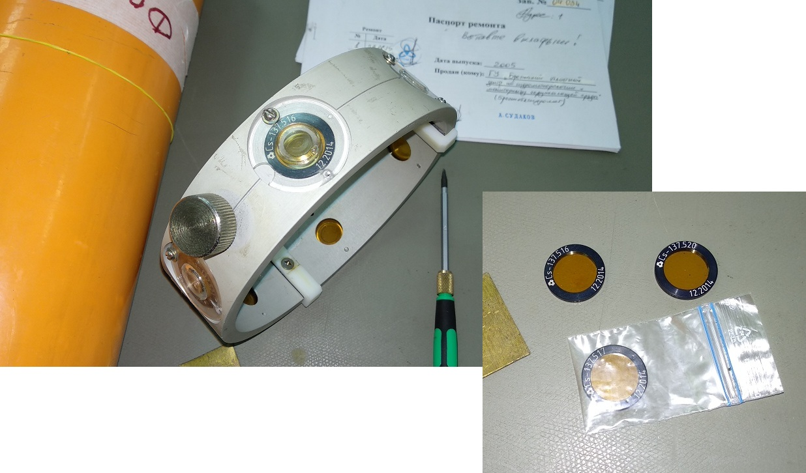
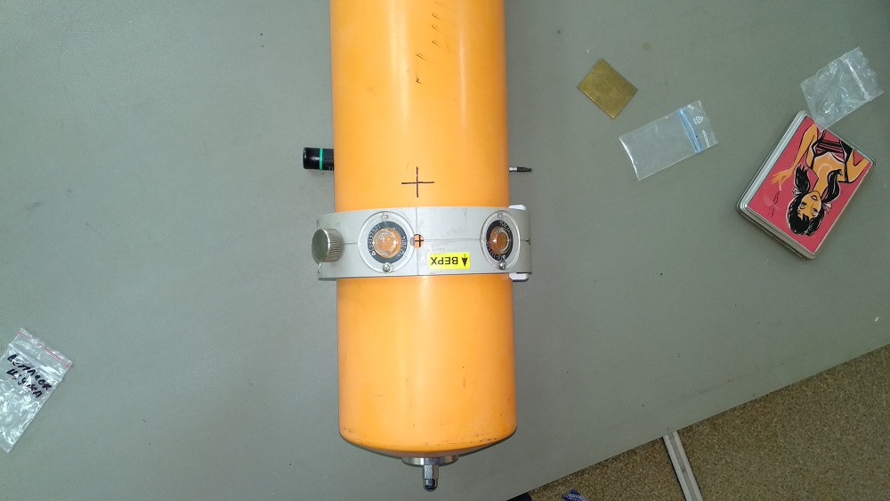
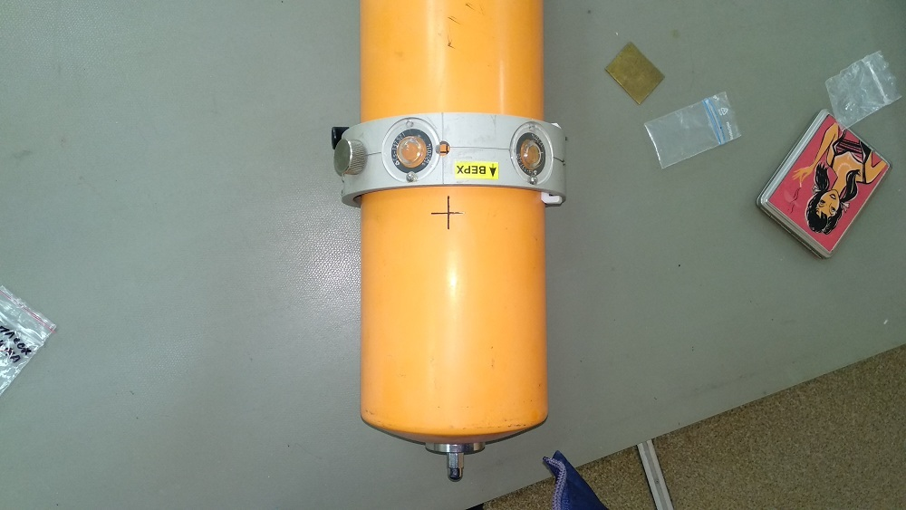
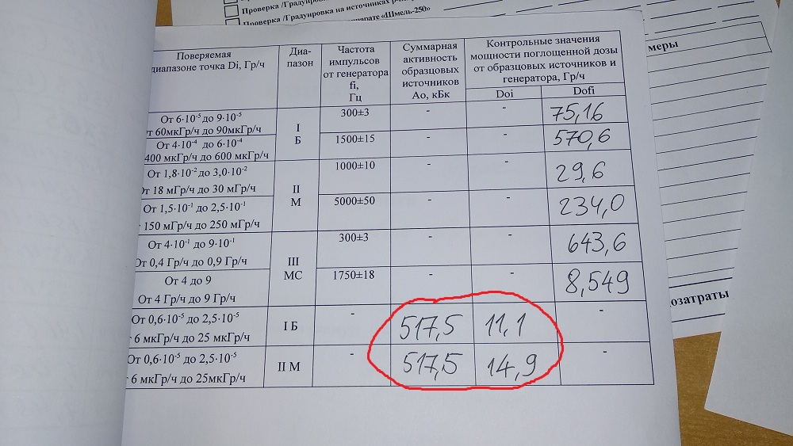

БДМГ-АТ2343. "Ошейник"
- Заказать ошейник.
- Саша Кийко принесет ошейник только с 3-мя источниками, остальные 3 (516-й, 517-й, 520-й) поставить
самому

- Совместить отверстие на ошейнике с первым крестом. Стрелка на надписи "верх" должна указывать на верх БД
- Через "SARKtech" снять показания в первом диапазоне

- Совместить отверстие на ошейнике со вторым крестом.
- Снять показания во втором диапазоне

- Записать показания в паспорт: 517,5 — это сумарная мощность источников, 11,1 — показания в
первом диапазоне, 14,9 -- во втором:
